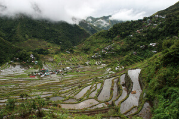

Banaue
Banaue, officially the Municipality of Banaue is a 4th class municipality in the province of Ifugao, Philippines. According to the 2020 census, it has a population of 20,652 people. It is widely known as the site of the UNESCO World Heritage Site, the Batad Rice Terraces and Bangaan Rice Terraces.
Bohol
Bohol is a province of the Philippines, in the country's Central Visayas region. It comprises Bohol Island and numerous smaller surrounding islands. Bohol is known for coral reefs and unusual geological formations, notably the Chocolate Hills.
Boracay
Boracay is a small island in the central Philippines. It's known for its resorts and beaches. Along the west coast, White Beach is backed by palm trees, bars and restaurants. On the east coast, strong winds make Bulabog Beach a hub for water sports.
Cebu
Cebu is a province of the Philippines, in the country's Central Visayas region, comprising Cebu Island and more than 150 smaller surrounding islands and islets. Its prosperous port capital, Cebu City, retains landmarks from its 16th-century Spanish colonial past, including the Basilica Minore del Santo Niño church and triangular Fort San Pedro.
Coron Island
Coron, officially the Municipality of Coron, is a 1st class municipality in the province of Palawan, Philippines. According to the 2020 census, it has a population of 65,855 people.
Davao City
Davao City, on the southern Philippine island of Mindanao, is a coastal commercial center near 2,954m-high Mount Apo, the country's highest peak. In the city center, People's Park is known for its colorful indigenous sculptures and lighted fountains. It's also home to Durian Dome, named after the pungent, spiky fruit that grows in abundance on Mindanao.
Manila
Manila, the capital of the Philippines, is a densely populated bayside city on the island of Luzon, which mixes Spanish colonial architecture with modern skyscrapers. Intramuros, a walled city in colonial times, is the heart of Old Manila. It’s home to the baroque 16th-century San Agustin Church as well as Fort Santiago, a storied citadel and former military prison.

Sagada
Sagada is a town in the Cordillera Mountains, within the Philippines' Mountain Province. Echo Valley's hanging coffins are displayed high on cliffs, while centuries-old coffins are stacked in burial sites like Lumiang Cave. The nearby Sumaguing Cave has unusual limestone formations. To the north, Bomod-ok Falls has a natural swimming pool.
Vigan
Vigan is a city in the Philippines, on the west coast of Luzon island. It's known for its preserved Spanish colonial and Asian architecture. Calle Crisologo dominates the Mestizo district, with its cobblestone streets, malecón, horse-drawn carriages and rustic mansions. Near the white baroque Vigan Cathedral are Plaza Salcedo, offering fountain light shows, and Plaza Burgos, known for its street-food stalls.